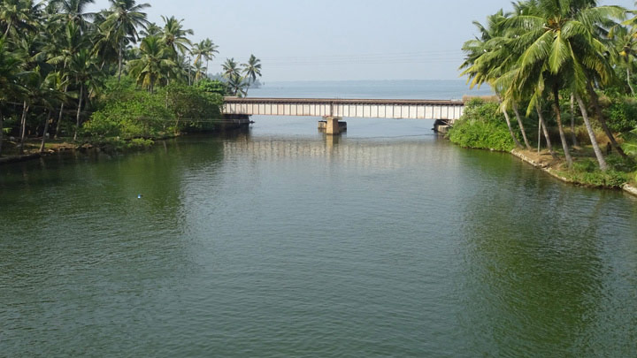
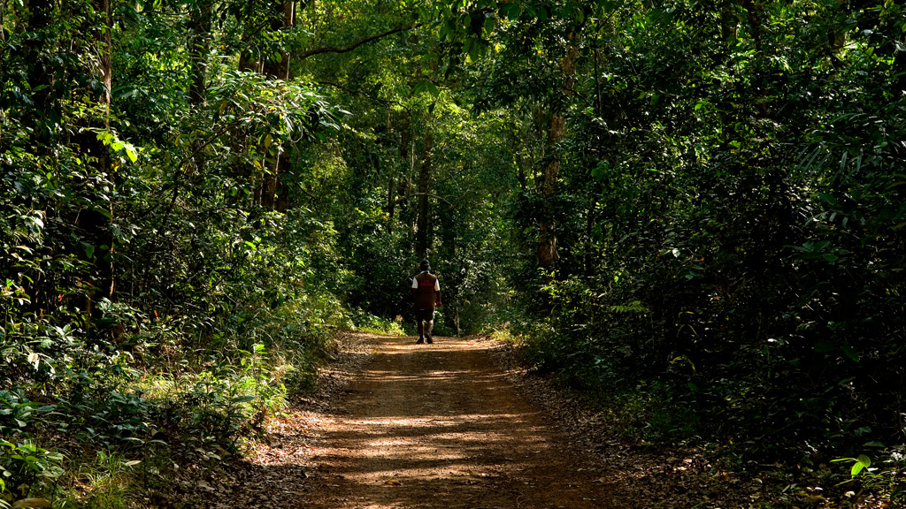

-
Munroe Island is a hidden pearl in the backwaters which is composed of a cluster of 8 islands. Each of them is separated by small water channels and lakes. Munroe Island is located about 27 km from Kollam. The place is named in honour of Resident Colonel John Munroe, of the former princely state of Travancore. He is said to have integrated several backwater regions by digging canals.

Munroe Island in Kollam
-

Jatayu Adventure Center
The world’s largest bird sculpture and within it a rock theme park for adventure enthusiasts is what today pays tribute to the mythical bird from the Indian epic Ramayana – Jatayu.
-
Welcome to Arippa- a pristine patch of succulent green in the foothills of the Western Ghats situated in Kollam district. As you walk past this verdant stretch on the edge of the Thiruvananthapuram-Shenkottai State Highway, you can see a smorgasbord of flora and fauna waiting to make your journey more exciting.

Arippa Ecotourism Village
-
From the firmament it appeared like the unfurling petals of a rose. Amidst the petals, rests a valley in the Shenduruney forest. The little green patches of land, spilled across the river, with its bewitching aura seem to have come down from a fairy tale. Welcome to Rosemala, a valley that abounds in the bounty of nature. The shape of the land akin to that of a rose flower might be the reason behind the name of this valley.
-
Palaruvi Waterfalls, which literally translates to ‘Stream of Milk’, comes down through rocks from a height of 300 feet. This has turned into a delightful picnic spot where one can enjoy a spectacular view uninterrupted. The rocky terrain one has to traverse before reaching it can be cumbersome but once these majestic waterfalls come into sight, any kind of fatigue disappears immediately.